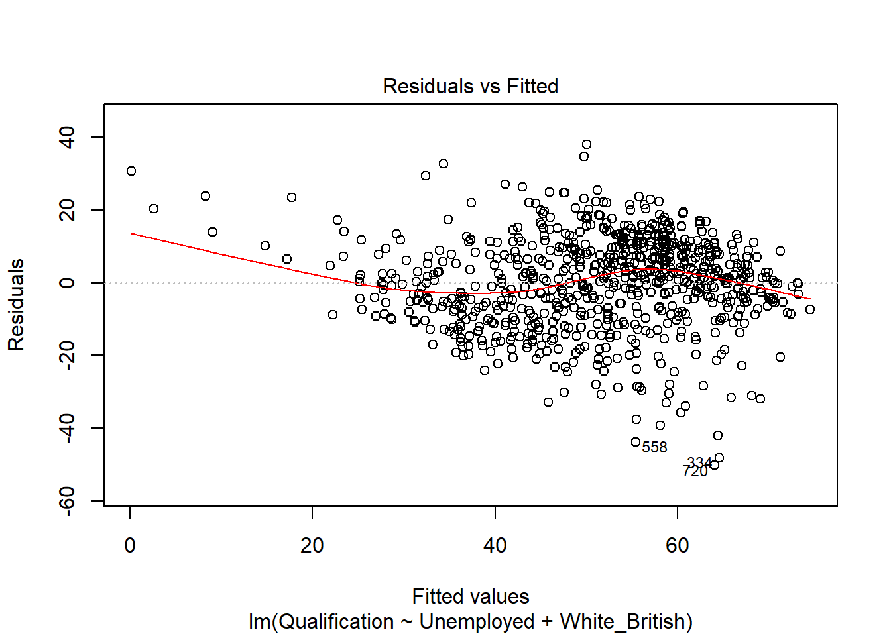
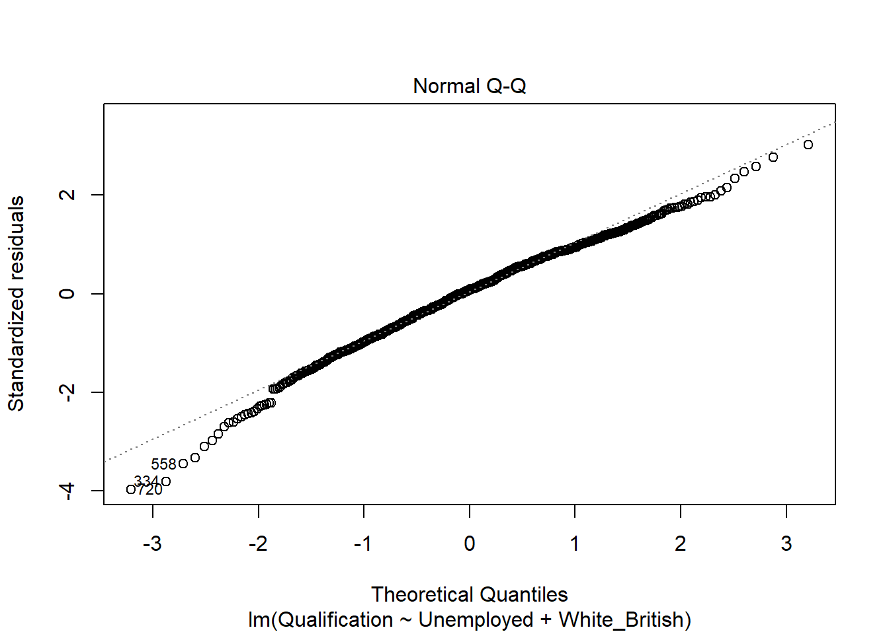
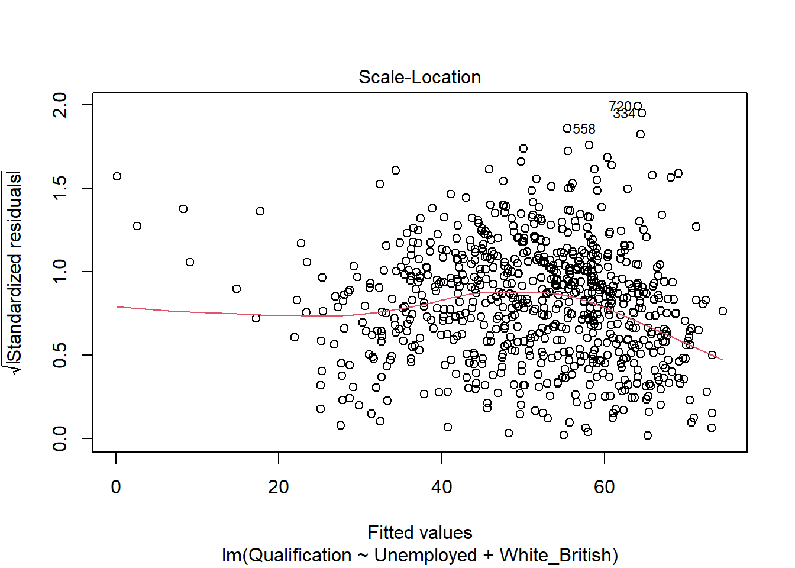
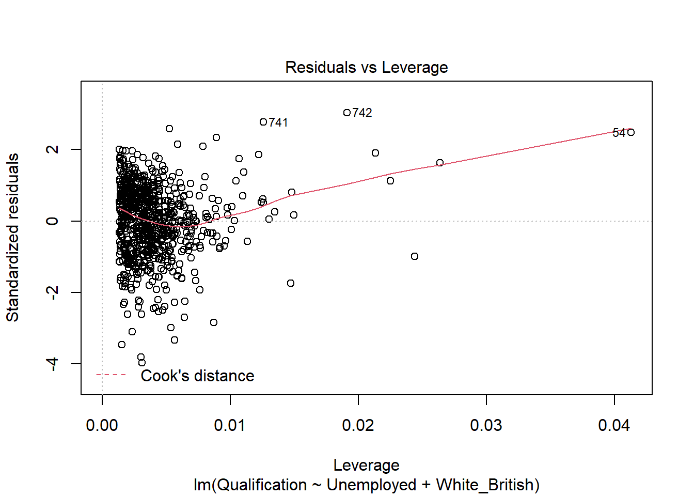
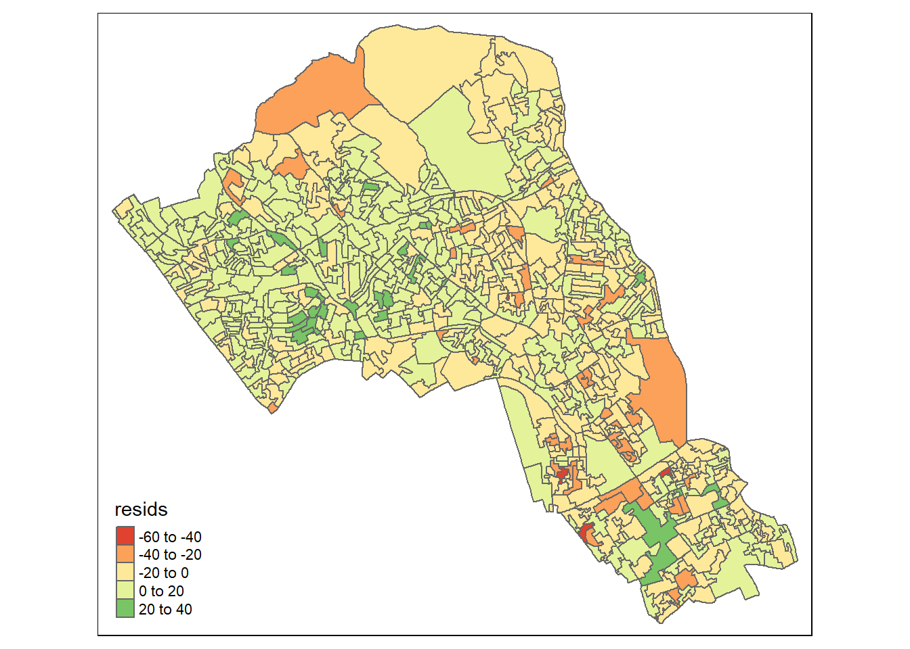
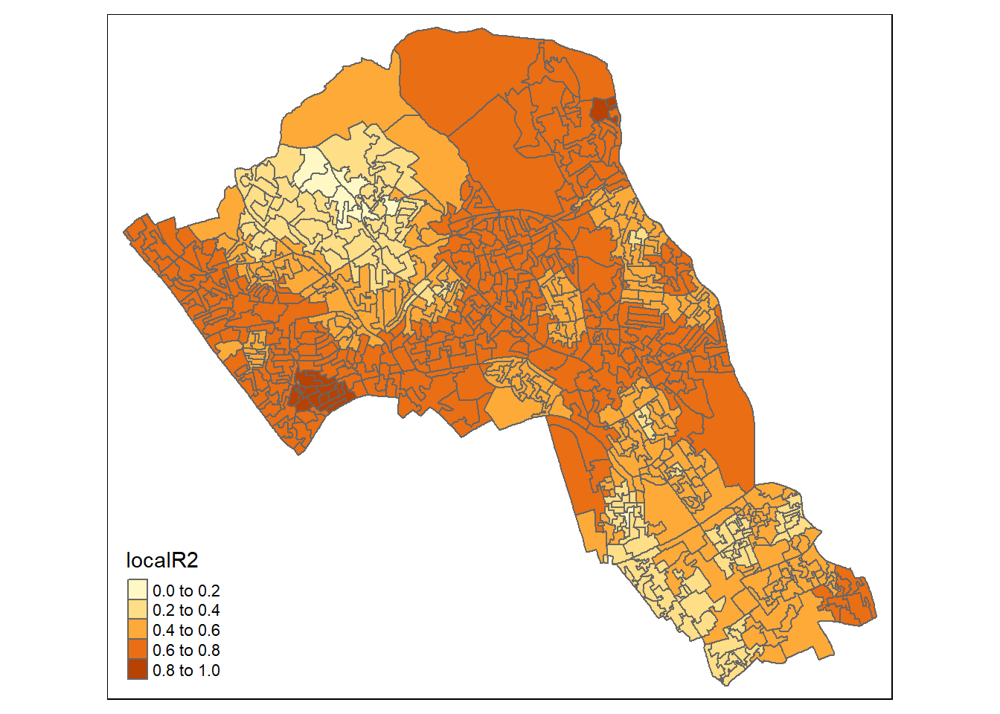
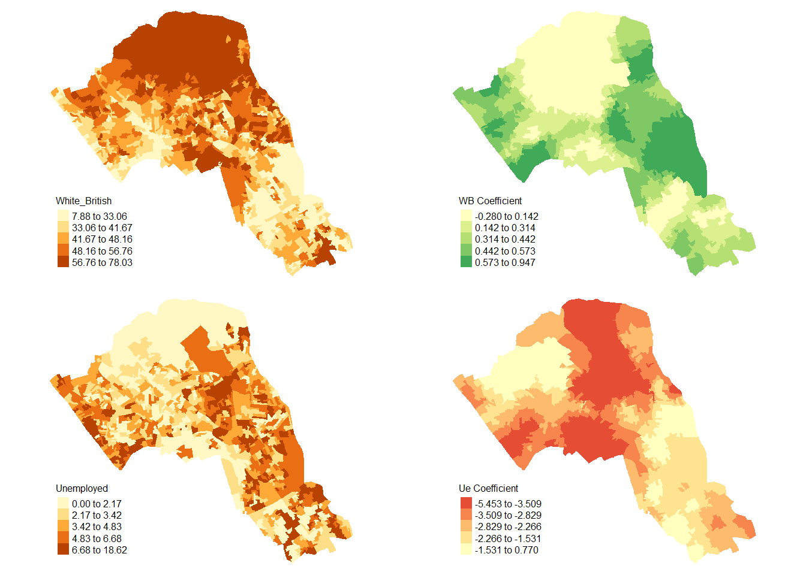

Regression analysis is the term used to describe a family of methods that seek to model the relationship between one (or more) dependent or response variables and a number of independent or predictor variables. Spatial regression methods are similar, but take explicit account of the spatial structure of data, in particular the lack of independence that typically exists between measurements made at nearby locations (see Tobler’s law).
We will explore ordinary regression and explore Geographical Weighted Regression.
Geographically weighted regression (GWR) is an exploratory technique mainly intended to indicate where non-stationarity is taking place on the map, that is where locally weighted regression coefficients move away from their global values. Its basis is the concern that the fitted coefficient values of a global model, fitted to all the data, may not represent detailed local variations in the data adequately - in this it follows other local regression implementations. It differs, however, in not looking for local variation in ‘data’ space, but by moving a weighted window over the data, estimating one set of coefficient values at every chosen ‘fit’ point. The fit points are very often the points at which observations were made, but do not have to be. If the local coefficients vary in space, it can be taken as an indication of non-stationarity.
The technique involves first selecting a bandwidth for an isotropic spatial weights kernel, typically a Gaussian kernel with a fixed bandwidth chosen by leave-one-out cross-validation. Choice of the bandwidth can be very demanding, as n regressions must be fitted at each step. Alternative techniques are available, for example for adaptive bandwidths, but they may often be even more compute-intensive.
In this tutorial we will:
gridExtra() with tmapFirst, you need to load the practical data (source).
Census.Data <-read.csv("./data/practical_data.csv")
library(rgdal)
Output.Areas <- readOGR("./data/Camden_oa11.shp")
# join our census data to the shapefile
OA.Census <- merge(Output.Areas, Census.Data, by.x="OA11CD", by.y="OA")We start with a linear regression model to understand the global relationship between our variables in our study area. In this case, the percentage of people with qualifications is our dependent variable, and the percentages of unemployed economically active adults and White British ethnicity are our two independent (or predictor) variables.
model <- lm(Qualification ~ Unemployed+White_British, data=OA.Census)
summary(model)##
## Call:
## lm(formula = Qualification ~ Unemployed + White_British, data = OA.Census)
##
## Residuals:
## Min 1Q Median 3Q Max
## -50.311 -8.014 1.006 8.958 38.046
##
## Coefficients:
## Estimate Std. Error t value Pr(>|t|)
## (Intercept) 47.86697 2.33574 20.49 <2e-16 ***
## Unemployed -3.29459 0.19027 -17.32 <2e-16 ***
## White_British 0.41092 0.04032 10.19 <2e-16 ***
## ---
## Signif. codes: 0 '***' 0.001 '**' 0.01 '*' 0.05 '.' 0.1 ' ' 1
##
## Residual standard error: 12.69 on 746 degrees of freedom
## Multiple R-squared: 0.4645, Adjusted R-squared: 0.463
## F-statistic: 323.5 on 2 and 746 DF, p-value: < 2.2e-16This model has an adjusted R\(^2\) value of 0.46. So we can assume 46% of the variance can be explained by the model. We can also observe the influences of each of the variables. However, the overall fit of the model and each of the coefficients may vary across space if we consider different parts of our study area. It is, therefore, worth considering the standardised residuals from the model to help us understand and improve our future models.
A residual is the difference between the predicted and observed values for an observation in the model. Models with lower R\(^2\) values would have greater residuals on average as the data would not fit the modelled regression line as well. Standardised residuals are represented as Z-scores where 0 represent the predicted values.
If you plot a linear model (i.e. our model object), R will print out four different plots of which are useful for evaluating the model fit. These are very briefly summarised as:
A good description of these plots and how to interpret them can be found here.
plot(model)
If you want to print just one of the plots you can enter which = n within the plot() function, i.e. plot(model, which = 3).
We can also map the residuals to see if there is a spatial distribution of them across the study area using the quickmap function from tmap.
library(tmap)
resids<-residuals(model)
map.resids <- cbind(OA.Census, resids)
names(map.resids)[6] <- "resids"
qtm(map.resids, fill = "resids")
If you notice a geographic pattern to the residuals, it is possible that an unobserved variable may also be influencing our dependent variable in the model.
Prior to running the GWR model we need to calculate a kernel bandwidth. This will determine now the GWR subsets the data when its test multiple models across space.
pacman::p_load(spgwr)
GWRbandwidth <- gwr.sel(OA.Census$Qualification ~ OA.Census$Unemployed+OA.Census$White_British, data=OA.Census,adapt=T)## Adaptive q: 0.381966 CV score: 101420.8
## Adaptive q: 0.618034 CV score: 109723.2
## Adaptive q: 0.236068 CV score: 96876.06
## Adaptive q: 0.145898 CV score: 94192.41
## Adaptive q: 0.09016994 CV score: 91099.75
## Adaptive q: 0.05572809 CV score: 88242.89
## Adaptive q: 0.03444185 CV score: 85633.41
## Adaptive q: 0.02128624 CV score: 83790.04
## Adaptive q: 0.01315562 CV score: 83096.03
## Adaptive q: 0.008130619 CV score: 84177.45
## Adaptive q: 0.01535288 CV score: 83014.34
## Adaptive q: 0.01515437 CV score: 82957.49
## Adaptive q: 0.01436908 CV score: 82857.74
## Adaptive q: 0.01440977 CV score: 82852.4
## Adaptive q: 0.01457859 CV score: 82833.25
## Adaptive q: 0.01479852 CV score: 82855.45
## Adaptive q: 0.01461928 CV score: 82829.32
## Adaptive q: 0.01468774 CV score: 82823.82
## Adaptive q: 0.01473006 CV score: 82835.89
## Adaptive q: 0.01468774 CV score: 82823.82Next, we can run the model and view the results.
gwr.model = gwr(OA.Census$Qualification ~ OA.Census$Unemployed+OA.Census$White_British, data=OA.Census, adapt=GWRbandwidth, hatmatrix=TRUE, se.fit=TRUE)
#print the results of the model
gwr.model## Call:
## gwr(formula = OA.Census$Qualification ~ OA.Census$Unemployed +
## OA.Census$White_British, data = OA.Census, adapt = GWRbandwidth,
## hatmatrix = TRUE, se.fit = TRUE)
## Kernel function: gwr.Gauss
## Adaptive quantile: 0.01468774 (about 11 of 749 data points)
## Summary of GWR coefficient estimates at data points:
## Min. 1st Qu. Median 3rd Qu. Max.
## X.Intercept. 11.08183 34.43427 45.76862 59.75372 85.01866
## OA.Census.Unemployed -5.45291 -3.28308 -2.55398 -1.79413 0.77019
## OA.Census.White_British -0.28046 0.19955 0.37788 0.53216 0.94678
## Global
## X.Intercept. 47.8670
## OA.Census.Unemployed -3.2946
## OA.Census.White_British 0.4109
## Number of data points: 749
## Effective number of parameters (residual: 2traceS - traceS'S): 132.6449
## Effective degrees of freedom (residual: 2traceS - traceS'S): 616.3551
## Sigma (residual: 2traceS - traceS'S): 9.903539
## Effective number of parameters (model: traceS): 94.44661
## Effective degrees of freedom (model: traceS): 654.5534
## Sigma (model: traceS): 9.610221
## Sigma (ML): 8.983902
## AICc (GWR p. 61, eq 2.33; p. 96, eq. 4.21): 5633.438
## AIC (GWR p. 96, eq. 4.22): 5508.777
## Residual sum of squares: 60452.16
## Quasi-global R2: 0.7303206Upon first glance, much of the outputs of this model are identical to the outputs of the linear model. However, we can explore the coefficients of this model across each area unit.
We create a results output from the model which contains a number of attributes which correspond with each unique output area from our OA.Census file. We have printed the names of each of the new variables in the example below. They include a local R\(^2\) value, the predicted values (for % qualifications) and local coefficients for each variable. We will then bind the outputs to our OA.Census polygon so we can map them.
results <-as.data.frame(gwr.model$SDF)
names(results)## [1] "sum.w" "X.Intercept."
## [3] "OA.Census.Unemployed" "OA.Census.White_British"
## [5] "X.Intercept._se" "OA.Census.Unemployed_se"
## [7] "OA.Census.White_British_se" "gwr.e"
## [9] "pred" "pred.se"
## [11] "localR2" "X.Intercept._se_EDF"
## [13] "OA.Census.Unemployed_se_EDF" "OA.Census.White_British_se_EDF"
## [15] "pred.se.1"gwr.map <- cbind(OA.Census, as.matrix(results))The variable names followed by the name of our original data frame (i.e. OA.Census.Unemployed) are the coefficients of the model.
qtm(gwr.map, fill = "localR2")
We will now consider some of the other outputs. We will create four maps in one image to show the original distributions of our unemployed and White British variables and their coefficients in the GWR model.
To facet four maps in tmap we can use functions from the grid and gridExtra packages which allow us to split the output window into segments. We will divide the output into four and print a map in each window.
Firstly, we will create four map objects using tmap. Instead of printing them directly as we have done usually, we all assign each map an object ID so it can be called later.
# create tmap objects
map1 <- tm_shape(gwr.map) + tm_fill("White_British", n = 5, style = "quantile") + tm_layout(frame = FALSE, legend.text.size = 0.5, legend.title.size = 0.6)
map2 <- tm_shape(gwr.map) + tm_fill("OA.Census.White_British", n = 5, style = "quantile", title = "WB Coefficient") + tm_layout(frame = FALSE, legend.text.size = 0.5, legend.title.size = 0.6)
map3 <- tm_shape(gwr.map) + tm_fill("Unemployed", n = 5, style = "quantile") + tm_layout(frame = FALSE, legend.text.size = 0.5, legend.title.size = 0.6)
map4 <- tm_shape(gwr.map) + tm_fill("OA.Census.Unemployed", n = 5, style = "quantile", title = "Ue Coefficient") + tm_layout(frame = FALSE, legend.text.size = 0.5, legend.title.size = 0.6)With the four maps ready to be printed, we will now create a grid to print them into. From now on every time we wish to recreate the maps we will need to run the grid.newpage() function to clear the existing grid window.
pacman::p_load(grid,gridExtra)
# creates a clear grid
grid.newpage()
# assigns the cell size of the grid, in this case 2 by 2
pushViewport(viewport(layout=grid.layout(2,2)))
# prints a map object into a defined cell
print(map1, vp=viewport(layout.pos.col = 1, layout.pos.row =1))
print(map2, vp=viewport(layout.pos.col = 2, layout.pos.row =1))## Variable "OA.Census.White_British" contains positive and negative values, so midpoint is set to 0. Set midpoint = NA to show the full spectrum of the color palette.print(map3, vp=viewport(layout.pos.col = 1, layout.pos.row =2))
print(map4, vp=viewport(layout.pos.col = 2, layout.pos.row =2))## Variable "OA.Census.Unemployed" contains positive and negative values, so midpoint is set to 0. Set midpoint = NA to show the full spectrum of the color palette.
De Smith, M. J., Goodchild, M. F., & Longley, P. (2018). Geospatial analysis: a comprehensive guide to principles, techniques and software tools. Troubador publishing ltd.